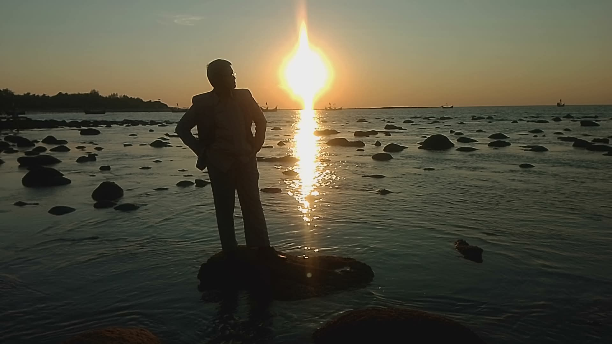

2009
Started Life
Landed on Earth.
Timeline
A visual story of my time flow — from first steps to quantum frontiers.
Landed on Earth.

This year I first touched a desktop in my house (I usually played games on that computer at that time) and this is the year I got admitted to class KG of my school.

This year I first attended a science fair. My project was on how traffic lights solve the traffic problem on a busy road.

During lockdown, that old PC got broken. I learned how to fix it by watching tutorials and successfully repaired it. This was the first spark of my interest in computers. After that, I intentionally broke my PC and rebuilt it.

This year I chose the science group to continue my studies and narrowed down my interests and future path.

I completed the SSC exam with a GPA 5.00 score.

My first visit to an island of my country.

I chose A-Level science to concentrate on Physics, Mathematics, and the research projects that inspire me most.